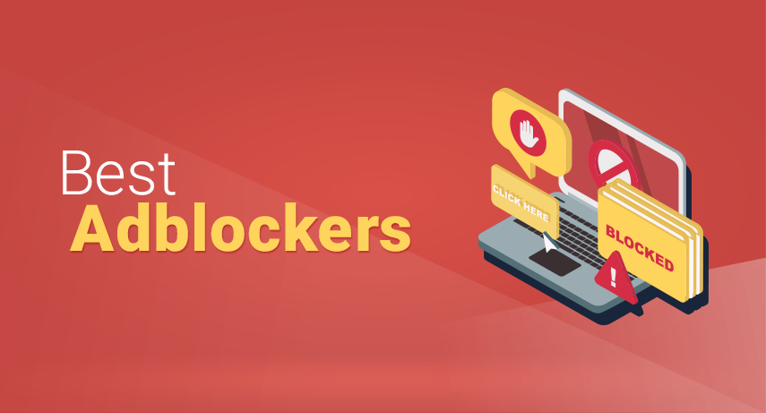
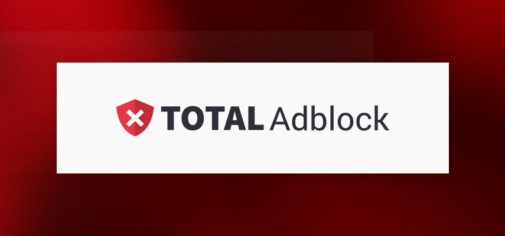
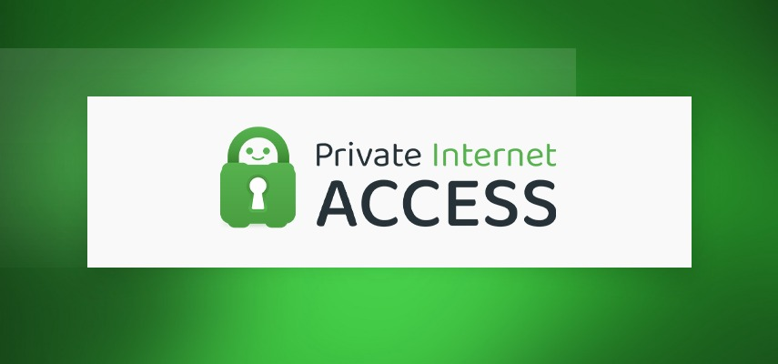

The Best Adblockers
Scott Leavey | Updated on July 14th 2024SEO and Online Marketing Consultant In a hurry? Here’s the top Ad Blocker for 2025:
Stop annoying ads from stalking you online with these top-rated ad blockers!
"Is it just me, or do adverts seem to follow me everywhere?" Nope, it's not just you. These are called online retargeting ads - an attempt to get visitors who didn't convert back to a website to complete the purchase.
Let's say, for example, that you were shopping for an ice cream maker but decided to purchase it at a later date. An hour later, while reading your favorite blog, there it is, pictured prominently in a banner ad. You'll start seeing it everywhere, on your Facebook feed, YouTube, even websites that don't have anything to do with homemade ice cream. The New York Times has a name for it, "stalker ads."
More than just obnoxious and intrusive, these internet tracking ads are getting more dangerous and out of control. New research suggests that mobile adware — software that hijacks a device to push unwanted ads on your screen — now accounts for 72% of mobile malware. Not only that, but accidentally clicking on these ads could install spyware, trojans, viruses, and other types of malware on your device.
It's just an ad, so how bad could it be? It depends. It can be as simple as your computer slowing down or hackers taking over your computer to do one of the following:
- Steal your identity.
- Run up your credit card debt.
- Extort money from you.
- Gain access to financial information and drain your bank accounts.
Yup, stalker ads go beyond creepy! You can mitigate the risks using an ad blocker — a software program that can stop all kinds of ads from displaying on your screen — pop-ups, on-page ads, and more.
An overview of the best Ad Blockers for 2025:
Besides malware and tracker protection, how else do I benefit from using an ad blocker?
- Better and cleaner browsing experience. Without distracting ads, sudden sound effects, and videos that play automatically, you can focus on the article you want to read or the video you want to watch. Replacing the ads with a reader-friendly white space makes everything easy on the eyes.
- It helps pages load faster. Since the browser is not bogged down with ads that contain text, images, and graphics, it can load the actual content that you wanted to see that much faster.
- Make your mobile data last longer. Rich media ads not only take time to load but also chews up too much data. Considerable research shows that ads gobble up more than half of a user's mobile data allowance. Once these ads are removed, you can stretch your mobile data and save money in the long run.
- Maintain longer battery life. These omnipresent ads also eat up too many system resources. Removing ads, privacy trackers, and unnecessary scripts from web pages will help prolong your phone's battery life.
It makes sense to use an ad blocker now, right? Now that you see the benefits of blocking ads, let's take a more in-depth look at the top Ad Blockers in 2025:
1. TotalAdblock — Faster, Safer, Ad-Free Browsing

TotalAdblock comes from the same group of people behind the award-winning antivirus software, TotalAV. Their promise is simple, to let you surf the web in peace without ads, and boy, did they deliver! During our testing, it was able to stop redirects and ads, pop-ups, third-party trackers, autoplay video ads, banners, and even Facebook and Youtube in-video ads.
Watching YouTube is also more enjoyable without those ads interrupting your viewing pleasure. Without a barrage of ads causing congestion, we noticed load times were much faster. You can even turn off push notifications by enabling the Quiet Mode! Of course, if you wish to support your favorite websites, you can simply go into the Acceptable Ads tab and type their URL.
Overall, TotalAdblock worked great in removing all types of ads. No wonder they scored 4.8 out of 5 with over 47,900 reviews in Trustpilot! We recommend it for anyone who wishes for a clean, faster, and safer browsing experience regardless of your device or operating system.
Get TotalAdblock - Block Annoying Ads & Trackers!

Private Internet Access is a robust VPN service that offers a proprietary ad blocker as part of their MACE feature. It blocks ads, trackers, and malware at the DNS level, so it's faster and more efficient at blocking harmful requests before they can even load.
For example, when you type a URL on your web browser, MACE routes it to the ad blocker. It then checks it against a database of ad servers flagged for sharing potentially harmful code. If it matches, MACE blocks your browser from downloading any ads, resulting in faster page loads and reduced bandwidth usage.
During testing, PIA successfully blocked ads and trackers, as well as shady domains. We even contacted customer support to verify just how many ads and trackers they're able to stop, and they provided a comprehensive list of ad domains that MACE currently filters!
All in all, we were delighted with MACE's performance and would recommend it to anyone looking to reduce clutter on websites and boost online security and privacy. You can protect up to 10 devices simultaneously, but unfortunately, it doesn't work on iOS. It's compatible with just about any other OS, browsers, and devices, though, including Windows, Mac OS, Android, Linux, Chromebook, Chrome, Firefox, Opera, and routers. Try it for 30 days risk-free!
Get Private Internet Access Adblocker - Block Annoying Ads & Trackers!
How we chose the Top Ad Blocker for 2025?
It can be hard to choose an ad blocker from the hundreds that are available in the app store. No worries. To save you time, we culled the best options by asking the following questions:
- Effectiveness: Does the ad blocker effectively block most ads?
- Compatibility: Is the ad blocker compatible with most web browsers?
- Performance: Does the ad blocker slow down the browsing experience or affect the performance of specific devices?
- Privacy: Does the ad blocker respect user privacy and protect user data?
- Configuration: Is the ad blocker easy to configure and use? Are there customization options available?
- Cost: Is the ad blocker free or paid? What features and benefits does the pricing model offer?
- Reputation: Does the ad blocker have a good reputation and track record among users and experts?
- Support: Does the ad blocker have good customer support and resources available for troubleshooting?
- Updates: Does the ad blocker receive regular updates to address new ad formats and security threats?
Top Ad Blockers - Frequently Asked Questions (FAQ)
💻 What does an ad blocker do?
An ad blocker is an application that helps improve your browsing experience by eliminating pop-up ads and other adverts. It doesn't technically block ads, though. What it does is prevent the ads from downloading by filtering web requests. This results in a faster download speed and cleaner web pages.
🛑 Should you use an ad blocker?
Yes! A good ad blocker can help stop annoying ads from disrupting your online activity, protects you from malware, prevent advertisers from tracking you across the web, and reduce bandwidth and data usage.
✅ Are ad blockers safe to use?
As long as you stick to reputable brands, ad blockers are generally safe to use. However, be wary of lesser-known brands. There are fake apps out there that masquerade as free ad blockers but collect data about your browsing habits and more.
Transparency and Trust: The aim of this website is to help you find the perfect software for your needs in an easy-to-view comparison list. You can read more about how we review and about our background in the About Us section of this website. Software.fish does not feature all of the software available in the market, we cherry-pick what we consider to be the leaders in each vertical. We try to keep this site updated and fresh, but cannot guarantee the accuracy of the information as well as the prices featured at all times. All prices quoted on this site are based on USD so there could be slight discrepancies due to currency fluctuations. Although the site is free to use, we do earn commissions from the software companies that we have partnered with. If you click on one of our links and then make a purchase, we will get paid by that company. This has an impact on the ranking, score, and order in which the software is presented in our list and elsewhere throughout the site. Software listings on this page DO NOT imply endorsement.